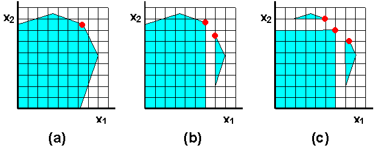
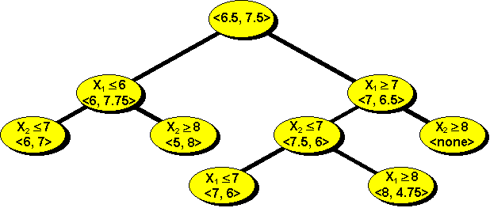
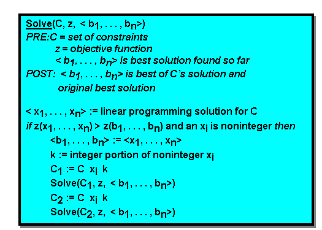

Upper Bounds on Integer Programs
Probably the most important fact concerning linear programming techniques and their relationship to integer programming problems is:
The relaxed (or linear programming) solution to an integer programming problem is an upper bound for all feasible integer solutions.
With this in mind, examine the optimization problem pictured in the shaded area of figure 1a.

Figure 1 - Bounding Example
If the objective function for this problem is
z = x1 + x2, the optimum solution found by linear programming is the pair:< x
1 , x2> = <6.5, 7.5>and due to the above observation, we know that no integer solution can produce a higher value for the objective function than this solution.
Now suppose we were to break the problem into two subproblems, one where
x1 is restricted to values no less than 7 and one where x1 is restricted to values no greater than 6. This is easily done by adding constraints (namely: x1 ³ 7 and x1 £ 6) to the original collection. These subproblems are pictured as the shaded areas of figure 1b. Note particularly that no feasible integer solutions have been omitted as they are all in one of the two shaded areas. Only the vertical strip of noninteger space between 6 and 7 has been removed. Relaxing these two new problems and solving for optima provides us with the solutions for our new problems that appear below.<6, 6.5> and <7, 6.5>
as solutions to the two subproblems. This is closer to the kind of solution we wish, but it still is not an integer solution.
Subdividing these two problems results in three new problems that are shown as the shaded areas of Figure 1c. This time we removed horizontal strips from the solution space.
Continuing on, we divide the remaining problems as indicated by the tree in Figure 2. It shows all of the subproblems and the optimum solutions for each.

Figure 2 - Solution Search Tree
One more subdivision took place after that shown in Figure 1c. The shaded region to the right was split into two subproblems. By restricting
x1 to be no greater than 7, we get as a feasible solution space, a line with an x1 value of 7 and x2 ranging from 2 to 6. By restricting x1 to be no less than 8 we end up with an area containing the single point <8, 4.75>.At this stage in the process three integer solutions have been found and one mixed solution still remains. The integer solutions all set the objective function to 13 and this is better than the remaining mixed solution <8, 4.75>. Thus any of the three is the optimum and we need not pursue the path in the search tree below the mixed solution.
In figure 3 the algorithm for this method is provided.

Figure 3 - A Bounding Algorithm for Integer Programming
A final note on this method is in order. This algorithm seems to have a slight advantage over the cutting plane method because the problem involves a smaller solution space at each stage. And, if we are fairly clever, some of the constraints in the original problem can be removed if the new bounding constraint supercedes them. For example, in figure 1a we solved a problem with four constraints, while in figure 1b there were two problems, each with three constraints. And since we are always splitting the problem at a vertex of its feasible solution space, at least one constraint can disappear from the new problem at each stage.